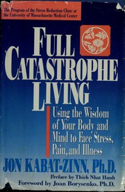

Full Catastrophe Living: Using the Wisdom of Your Body and Mind to Face Stress, Pain, and Illness
Book·Jon Kabat-Zinn, 1990·多舛的生命

A core popular book on MBSR, connecting stress, pain and the care of chronic illness.
- Author
- Jon Kabat-Zinn
- Year
- 1990
- Difficulty
- Intermediate
- Kind
- Practice
- Schools
- Mindfulness-Based Stress Reduction
- Core theories
- MBSR Eight-Week Program
Editions
- Chinese edition 《多舛的生命》 [美] 乔恩·卡巴金 · tr. 童慧琦 / 高旭滨 · 机械工业出版社 · 2018 Douban 8.3 (486 ratings) Douban page ↗
- English edition Full Catastrophe Living: Using the Wisdom of Your Body and Mind to Face Stress, Pain, and Illness Jon Kabat-Zinn · Revised edition, Bantam · 2013 Open Library ↗